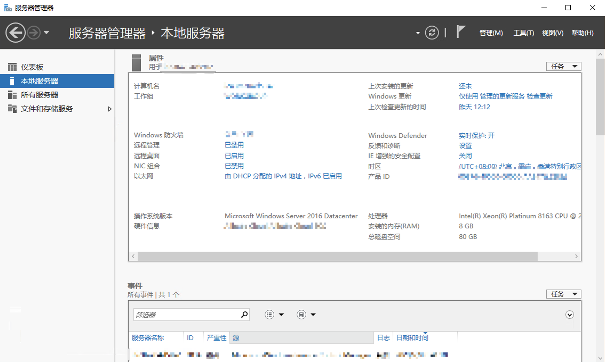
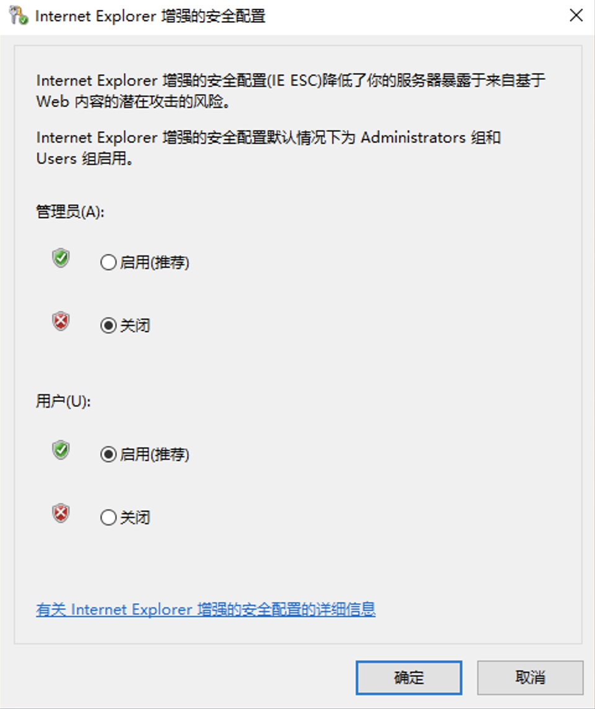

准备
开始之前，需要完成下列准备工作。
环境准备
- 一个基于Office 365 SharePoint Online平台的网站集（Site Collection），并拥有该网站集的管理员账号。
- 基于上条所述网站集创建了一个子网站用于承载APortal工作流平台相关的数据和页面。
例如： https://YourCompanyName.SharePoint.com/sites/SiteCollectionName/workflow
- 一台安装Windows 10或Windows Server 2012以上操作系统，可运行Windows PowerShell，可连接Internet的计算机。
- 确定Windows PowerShell版本为5.0或5.1。
- 确定.Net Framework 版本为4.5或以上（不支持.Net Core）。
PowerShell 执行环境准备
为了 APortal 命令行管理工具安装顺利，需要在安装前检查当前 PowerShell 执行环境一些参数，如下：
TLS 设置
从 2020 年 4 月开始，PowerShell Gallery 只支持 TLS 1.2 版本，参考 PowerShell 技术博客 PowerShell Gallery TLS Support。因此在执行安装 APortal 管理工具前需要设置当前执行环境的 TLS 版本为 1.2。
[Net.ServicePointManager]::SecurityProtocol = [Net.SecurityProtocolType]::Tls12 |
Execution Policies 设置
PowerShell Execution Policies 是一项安全功能，可控制 PowerShell 加载配置文件和运行脚本的条件。 此功能有助于防止执行恶意脚本。具体信息请参考: About Execution Policies。
安装 APortal 管理工具需要设置当前用户的执行权限，具体代码如下：
Set-ExecutionPolicy -Scope CurrentUser -ExecutionPolicy RemoteSigned |
IE 增强的安全配置设置
在 Windows Server 上，为了降低服务器暴露于来自基于 Web 内容的潜在攻击的风险，默认情况下 IE 增加的安全配置处于开启状态， 不能通过 IE 浏览器 打开非信任的网页链接。安装 APortal 管理工具后，使用Set-APortalWeb命令设置 SharePoint Online 网站，需要使用 Web 登录，因此，需要关闭 IE 增强的安全配置，让浏览器能够打开您需要配置 APortal 的网站。

